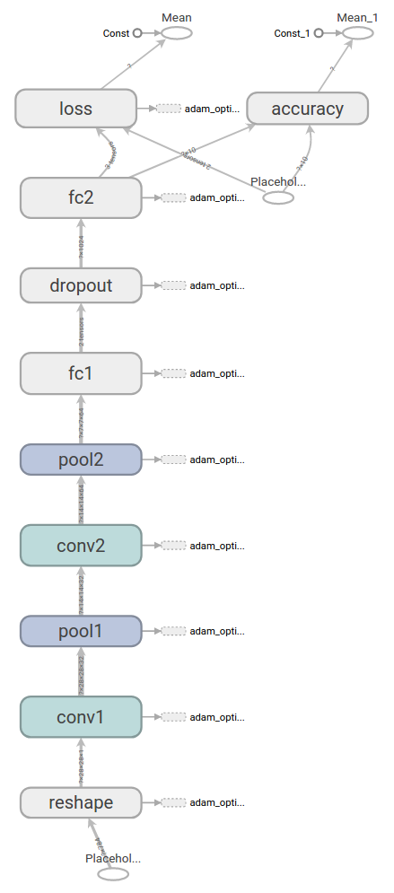

TensorFlow的基本概念和原理
听起来很是高深的机器学习，但是我一点不懂。说实话这个框架不知道怎么拿来即用。但本着一直一来学习都是要了解原理的这种习惯，还是来看一下官方文档上的一些指导。
数据流图
TensorFlow 使用数据流图将计算表示为独立的指令之间的依赖关系。这可生成低级别的编程模型，在该模型中，您首先定义数据流图，然后创建 TensorFlow 会话，以便在一组本地和远程设备上运行图的各个部分。

初看这个图的时候是懵的，大概能模糊的知道一种数据流向的概念，但更多的就不清楚了。
数据流是一种用于并行计算的常用编程模型。在数据流图中，节点表示计算单元，边缘表示计算使用或产生的数据。例如，在 TensorFlow 图中，tf.matmul 操作对应单个节点，该节点具有两个传入边缘（要相乘的矩阵）和一个传出边缘（乘法结果）。
数据流图实际上是一个模板？一个数据流的描述？ 描述了操作对于数据流的依赖关系。
TensorFlow中的图
我们实际上可以把 TensorFlow 看作两个相互独立的部分：
- 构建计算图（ tf.Graph）
- 运行计算图（ tf.Session()）
计算图是排列成一个图的一系列 TensorFlow 指令。图由两种类型的对象组成。
- 操作（简称“op”）：图的节点。操作描述了消耗和生成张量的计算。
- 张量：图的边。它们代表将流经图的值。大多数 TensorFlow 函数会返回 tf.Tensors。
操作Operation
操作 定义了一个在 张量 上进行计算的节点。
操作 是 TensorFlow 图中的一个节点，其将 0 个或 多个 张量 对象作为输入，然后产生 0 或者 多个 张量 对象作为输出。操作 类型的对象通过调用 Python 接口中的 操作符构造器来产生（如 tf.matmul 或者 tf.Graph.create_op。
例如，c = tf.matmul(a, b) 会创建一个 MatMul 类型的 操作 对象，其将 张量 a,b 作为输入，然后输出 c。
张量Tensor
在 张量类的定义中 这样说明：
代表 操作 的一个输出。
一个 张量 是一个 操作 一个输出的 符号句柄。 其并不保存那个操作输出的值，其只是在一个 TensorFlow 的 tf.Session 中提供一个计算这些值的方式。
张量的定义有两个根本的目的：
- 一个张量（Tensor）可以当作输入传递给另外一个 操作。这在多个操作间建立数据流连接，以此来使 TensorFlow 能个执行完一个巨大，多步的计算的 图。
- 在这个图已经在会话中启动后， Tensor 的值可以通过把张量传递给
tf.Session.run来计算。t.eval()是对tf.get_default_session().run(t)的简写。
构建图 tf.Graph
大多数 TensorFlow 程序都以数据流图构建阶段开始。在此阶段，您会调用 TensorFlow API 函数，这些函数可构建新的 tf.Operation（节点）和 tf.Tensor（边缘）对象并将它们添加到 tf.Graph 实例中。TensorFlow 提供了一个默认图，此图是同一上下文中的所有 API 函数的明确参数。例如：
调用 tf.constant(42.0) 可创建单个 tf.Operation，该操作可以生成值 42.0，将该值添加到默认图中，并返回表示常量值的 tf.Tensor。
调用 tf.matmul(x, y) 可创建单个 tf.Operation，该操作会将 tf.Tensor 对象 x 和 y 的值相乘，将其添加到默认图中，并返回表示乘法运算结果的 tf.Tensor。
执行 v = tf.Variable(0)可向图添加一个 tf.Operation，该操作可以存储一个可写入的张量值，该值在多个 tf.Session.run 调用之间保持恒定。tf.Variable 对象会封装此操作，并可以像张量一样使用，即读取已存储的值的当前值。tf.Variable 对象也具有
assign和assign_add等方法，这些方法可创建 tf.Operation 对象，这些对象在执行时将更新已存储的值。（请参阅变量了解关于变量的更多信息。）调用 tf.train.Optimizer.minimize 可将操作和张量添加到计算梯度的默认图中，并返回一个 tf.Operation，该操作在运行时会将这些梯度应用到一组变量上。
大多数程序仅依赖于默认图。尽管如此，请参阅处理多个图了解更加高级的用例。高阶 API（比如 tf.estimator.Estimator API）可替您管理默认图，并且还具有其他功能，例如创建不同的图以用于训练和评估。
类似于张量的对象
许多 TensorFlow 操作都会接受一个或多个 tf.Tensor 对象作为参数。例如，tf.matmul 接受两个 tf.Tensor 对象，tf.add_n 接受一个具有 n 个 tf.Tensor 对象的列表。为了方便起见，这些函数将接受类张量对象来取代 tf.Tensor，并将它明确转换为 tf.Tensor（通过 tf.convert_to_tensor 方法）。类张量对象包括以下类型的元素：
- tf.Tensor
- tf.Variable
- numpy.ndarray
- list（以及类似于张量的对象的列表）
- 标量 Python 类型：bool、float、int、str
您可以使用 tf.register_tensor_conversion_function注册其他类张量类型。
在以下会话中执行图：tf.Session
TensorFlow 使用 tf.Session 类来表示客户端程序（通常为 Python 程序，但也提供了其他语言的类似接口）与 C++ 运行时之间的连接。tf.Session 对象使我们能够访问本地机器中的设备和使用分布式 TensorFlow 运行时的远程设备。它还可缓存关于 tf.Graph 的信息，使您能够多次高效地运行同一计算。
创建 tf.Session
如果您使用的是低阶 TensorFlow API，您可以为当前默认图创建一个 tf.Session，如下所示：
# Create a default in-process session. |
由于 tf.Session 拥有物理资源（例如 GPU 和网络连接），因此通常（在 with 代码块中）用作上下文管理器，并在您退出代码块时自动关闭会话。您也可以在不使用 with 代码块的情况下创建会话，但应在完成会话时明确调用 tf.Session.close 以便释放资源。
tf.Session.init 接受三个可选参数：
target。 如果将此参数留空（默认设置），会话将仅使用本地机器中的设备。但是，您也可以指定 grpc:// 网址，以便指定 TensorFlow 服务器的地址，这使得会话可以访问该服务器控制的机器上的所有设备。请参阅 tf.train.Server 详细了解如何创建 TensorFlow 服务器。例如，在常见的图间复制配置中，tf.Session 连接到 tf.train.Server 的流程与客户端相同。分布式 TensorFlow 部署指南介绍了其他常见情形。
graph。 默认情况下，新的 tf.Session 将绑定到当前的默认图，并且仅能够在当前的默认图中运行操作。如果您在程序中使用了多个图（更多详情请参阅使用多个图进行编程），则可以在构建会话时指定明确的 tf.Graph。
config。 此参数允许您指定一个控制会话行为的 tf.ConfigProto。例如，部分配置选项包括：
allow_soft_placement。将此参数设置为 True 可启用“软”设备放置算法，该算法会忽略尝试将仅限 CPU 的操作分配到 GPU 设备上的 tf.device 注解，并将这些操作放置到 CPU 上。
cluster_def。使用分布式 TensorFlow 时，此选项允许您指定要在计算中使用的机器，并提供作业名称、任务索引和网络地址之间的映射。详情请参阅 tf.train.ClusterSpec.as_cluster_def。
graph_options.optimizer_options。在执行图之前使您能够控制 TensorFlow 对图实施的优化。
gpu_options.allow_growth。将此参数设置为 True 可更改 GPU 内存分配器，使该分配器逐渐增加分配的内存量，而不是在启动时分配掉大多数内存。
使用 tf.Session.run 执行操作
tf.Session.run 方法是运行 tf.Operation 或评估 tf.Tensor 的主要机制。您可以将一个或多个 tf.Operation 或 tf.Tensor 对象传递到 tf.Session.run，TensorFlow 将执行计算结果所需的操作。
tf.Session.run 要求您指定一组 fetch，这些 fetch 可确定返回值，并且可能是 tf.Operation、tf.Tensor 或类张量类型，例如 tf.Variable。这些 fetch 决定了必须执行整体 tf.Graph 的哪些子图以生成结果：该子图包含 fetch 列表中指定的所有操作，以及其输出用于计算 fetch 值的所有操作。例如，以下代码段说明了 tf.Session.run 的不同参数如何导致执行不同的子图：
x = tf.constant([[37.0, -23.0], [1.0, 4.0]]) |
tf.Session.run 也可以选择接受 Feed 字典，该字典是从 tf.Tensor 对象（通常是 tf.placeholder 张量）到在执行时会被替换为这些张量的值（通常是 Python 标量、列表或 NumPy 数组）的映射。例如：
# Define a placeholder that expects a vector of three floating-point values, |
tf.Session.run 也接受可选的 options 参数（允许您指定与调用有关的选项）和可选的 run_metadata 参数（允许您收集与执行有关的元数据）。例如，您可以同时使用这些选项来收集与执行有关的跟踪信息：
y = tf.matmul([[37.0, -23.0], [1.0, 4.0]], tf.random_uniform([2, 2])) |
直观展示您的图
TensorFlow 包含可帮助您理解图中的代码的工具。图可视化工具是 TensorBoard 的一个组件，可在浏览器中可视化图的结构。要创建可视化图表，最简单的方法是传递 tf.Graph（在创建 tf.summary.FileWriter 时）：
# Build your graph. |
随后，您可以在 tensorboard 中打开日志并转到“图”标签，查看图结构的概要可视化图表。请注意，典型的 TensorFlow 图（尤其是具有自动计算的梯度的训练图）包含的节点太多，无法一次性完成直观展示。图可视化工具使用名称范围来将相关指令分组到“超级”节点中。您可以点击任意超级节点上的橙色“+”按钮以展开内部的子图。

原文作者: Gowa2017 Zhang
原文链接: https://gowa2017.github.io/TensorFlow/TensorFlow的基本概念和原理.html
版权声明: 转载请注明出处(必须保留作者署名及链接)